| |
B-Curves And B-Surfaces |
| <<< Geometry | Chapters | Nominal Geometry >>> |
Parasolid contains fully integrated B-curves and B-surfaces. By this, we mean you can attach the curves and surfaces to edges and faces, and then apply any operation offered through the PK Interface to them, from boolean operations to the attachment of attributes.
B-geometry is parametrically defined piecewise polynomial or rational polynomial geometry which is represented in Parasolid as B-spline (NURBS) curves and surfaces.
B-curve and B-surface geometry may be made either explicitly or automatically in Parasolid:
B-surfaces can be combined with existing bodies by means of:
There is no concept of a ‘primitive free form solid’, in the way that, for example, spherical surfaces correspond to solid spheres. Therefore a sequence of modeling operations is required to produce a solid body incorporating B-curve and B-surface geometry. Useful sequences of operations are described in a later section.
Surfaces in Parasolid belong to one of the following general types:
The first two types are implicit surfaces; they are defined as the solutions to an implicit equation of the form f( x)=0, where x is a point in space and f is a function of x. The function f actually divides space into two regions: points for which f( x) is positive, and points for which it is negative. The surface is the boundary between the two regions. It is always closed, like a sphere, or infinite like a plane or cylinder.
B-surfaces are different, in that they are only defined over a finite region of space; they have boundaries and do not necessarily divide space into distinct regions.
In a similar way, B-curves are bounded. Generated surfaces are surfaces which may be produced when sweeping or spinning. Swept surfaces are infinite in the sweep direction and spun surfaces closed in the spin direction. The form of the other direction depends on the geometry of the swept or spun curve.
B-curves and B-surfaces may be created in several ways, including:
For examples showing the creation of B-geometry, see the code examples in the
C++\Code Examples\Modelling\Geometry
Creation
folder, and the code examples in the
C#\ExampleApplication.Net\Code
Examples\Modelling\B-Geometry
folder located in
example_applications
in your Parasolid installation folder.
A curve or surface may be created from B-spline control points and knot vectors using PK_BCURVE_create and PK_BSURF_create respectively. Both rational and non-rational B-spline curves and B-surfaces may be created this way. The diagram below shows a B-spline curve with its control polygon.
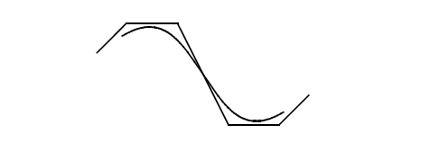The curve or surface can be forced to be periodic. A periodic curve must be closed and meet itself smoothly. A surface can be periodic in either u or v directions giving a tubular surface, or in both directions giving a toroidal surface.
Figure 18-2 A periodic surface
PK_BCURVE_create and PK_BSURF_create can make B-geometry with knots that are closer together than the session angular precision if PK_SESSION_set_close_knots is called with PK_LOGICAL_true. This will result in invalid entities that are not suitable for general modeling purposes, so it is up to your application to remove any such knots at some later point in order to make the part valid.
PK_BCURVE_create_piecewise and PK_BSURF_create_piecewise create a curve or surface from piecewise data. The data may be in several forms, namely Bezier, Hermite, polynomial or Taylor series. By ‘piecewise’ it is meant that each segment of a curve or patch of a surface is independent of the other segments or patches (except that the curve or surface must be position (G0) continuous across adjacent segments or patches). The curve or surface can be either rational or non-rational.
Figure 18-3 A surface created from piecewise data
PK_BCURVE_join creates a B-curve by combining a sequence of curves which meet head to tail. In general, the resultant curve is parameterised such that, where possible, joins at which the curves are G1-continuous are made C1-continuous. You can override this property by supplying knot values, where the curves join, via the option structure which may be used in preference to those computed to establish the continuity condition. The value of the
snap_tolerance
is used to control whether a supplied knot value is used in preference to the computed one. The resultant curve is parameterised on the interval [0, 1].
You can sweep or spin an existing B-curve into a B-surface using PK_BCURVE_sweep and PK_BCURVE_spin, respectively.
When a B-curve is spun, the angle of spin must not be greater than 2π or less than -2π.
Figure 18-4 A surface created by spinning a B-curve
Parasolid provides several functions that let you produce a B-geometry representation from an existing geometry:
By default, these functions return an exact representation wherever possible. In particular, they can return exact representations of conics and existing regions of B-geometry. Otherwise an approximation is produced.
You can use these functions to extract a region of an existing B-surface or B-curve.
These functions share the following options:
tolerance |
The tolerance of any approximation used in the resulting geometry. |
continuity |
The preferred continuity of the resulting geometry. Default: PK_continuity_c1. |
force_continuity |
The handling of discontinuities of an input curve. If a continuity level is supplied, small curve discontinuities are removed up to that specific continuity. Large discontinuities that are not removed are reported as PK_REPORT_3_discontinuities_c. Default: PK_force_continuity_no_c |
force_non_rational |
The preferred form of the resulting geometry, where the output can be forced to be non-rational. Default: PK_LOGICAL_false. |
PK_CURVE_make_bcurve_2 and PK_CURVE_make_bcurve_array share the following additional options:
have_degree |
|
degree |
|
force_bezier |
Whether the resulting |
In addition, PK_CURVE_make_bcurve_array has the following option:
|
Allows you to specify the destination for the resulting array of b-curves. If the destination is:
|
PK_SURF_make_bsurf_2 has the following additional option:
force_cubic |
Whether the resulting |
PK_SURF_make_bsurf_array has the following additional options:
have_u_degree |
Whether the degree of the resultant b-surface in the |
u_degree |
The degree of the resultant b-surface in the |
have_v_degree |
Whether the degree of the resultant b-surface in the |
v_degree |
The degree of the resultant b-surface in the |
destination |
Allows you to specify the destination for the resulting array of b-surfaces. If the destination is:
|
Note: Parasolid also provides PK_BCURVE_create_fitted and PK_BSURF_create_fitted. These functions also create B-geometry from existing geometry, but based on a set of points sampled from the existing geometry. They differ from the functions described here in the following ways:
See Section 18.4.8, “Rebuilding curves and surfaces”, for information on these functions. |
You can create a B-curve in parameter space by interpolating or fitting a set of positions using PK_BCURVE_create_spline_2. Parasolid fits a piecewise curve that is (depending on the options used) continuous in slope and curvature through the specified positions, and creates a suitable set of knots and control points to support the generated curve.
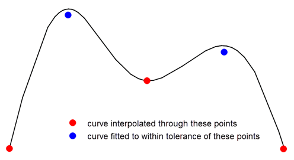Figure 18-5 A B-curve created by interpolating and fitting to a set of positions
You can control the splining operation in a number of ways to further define the shape of the curve or surface using the options available in PK_BCURVE_create_spline_2_o_t.
PK_BCURVE_create_spline_2 lets you choose between creating a B-curve by interpolating through the received positions, or fitting a B-curve to within a specified tolerance of those positions. You can also combine these two methods by specifying that certain positions are interpolated, while others are fitted.
PK_BCURVE_create_spline_2_o_t contains the following options to let you control this behaviour:
The
is_periodic
option specifies that the B-curve should be periodic: the resulting B-curve meets itself smoothly at its ends.
Figure 18-6 A periodic B-curve created from three supplied positions
The
degree
option specifies the degree of the resulting B-curve.
You can supply parameter information for any of the positions passed to the function to control the shape. Figure 18-7 shows an example where a B-curve is splined through five positions. By supplying parameter information (shown in bold) for some of the points, the shape of the curve can be controlled as shown.
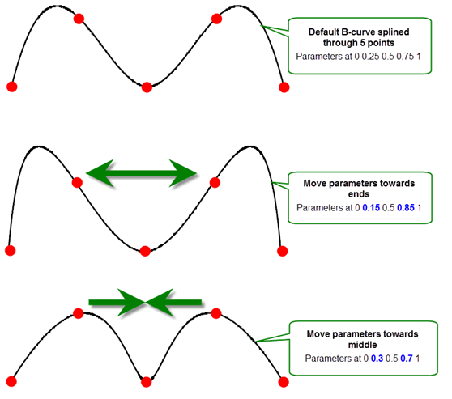Figure 18-7 Controlling B-curves using parameter information
In addition to controlling parameter information at each position, you can define the parameter range for the whole B-curve.
|
Note: For periodic B-curves, either the start or the end of the parameter range (but not both) can be supplied as parameters as shown in
Figure 18-6. |
You can supply derivative information for any of the positions passed to the function. This gives you a broad range of control over the shape of the resultant curve. For example:
Figure 18-8 A curve with natural end conditions - zero curvature
Figure 18-9 A curve with specified tangents at the ends
Any derivative information specified must have an order less than 4.
Another way that you can control the shape of the B-curve is by using knot sets. If you just pass a series of positions to PK_BCURVE_create_spline_2, Parasolid creates a suitable set of knots for the resulting B-curve. However, you can also specify a knot set yourself. Each knot value supplied lies on the boundary between segments of the resulting B-curve. The spacing between values in the knot set gives an indication of the amount of curve in that segment. Increasing the gap between two knots increases the length of curve in the segment of the curve defined by that portion of the knot set.
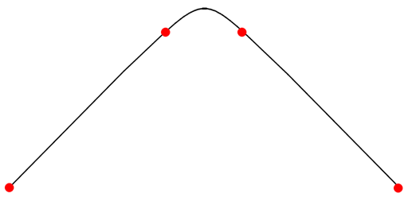Figure 18-10 A curve with its shape changed by supplying a knot set explicitly
You can control the multiplicity of the knots supplied to PK_BCURVE_create_spline_2 using the
knot_mults
option. In general, the higher the multiplicity of a knot, the less continuity can be guaranteed between those segments in the resulting B-curve.
If you supply PK_BCURVE_create_spline_2 with too few knots to support the positions and derivatives to be interpolated, Parasolid may be unable to generate a suitable B-curve. In this case, you can use the
overdefined
option to request that Parasolid generates additional knots as required. By default, PK_BCURVE_create_spline_2 fails if you supply too few knots (unless you do not supply a knot set at all).
You can control the shape of the resulting B-curve by supplying clamp information that restricts the resulting B-curve to the box defined by the positions received by PK_BCURVE_create_spline_2, such that:
You can use the
clamp
option to specify one of the following:
Figure 18-11 illustrates the three different B-curves that can be created from the same set of received positions by changing the supplied
clamp
.
Figure 18-11 Specifying clamp conditions for B-curves
You should also supply a set of axes using the
clamp_axes
and
have_clamp_axes
options, in order to specify the axis along which the coincident values are aligned.
|
Note: Supplying a clamp can have the effect of removing the continuity in slope and curvature of the B-curve. It can also produce degenerate curves. |
If you supply clamp information, a number of constraints apply. See the documentation for PK_BCURVE_create_spline_2_o_t for details.
You can specify a chordal tolerance for any B-curve created using the
have_chordal_tol
and
chordal_tol
options. These options ensure that the B-curve created by PK_BCURVE_create_spline_2 is within a specified distance of the chords between consecutive positions, as shown in
Figure 18-12.
Figure 18-12 Specifying a chordal tolerance
To specify a chordal tolerance, set
have_chordal_tol
to PK_LOGICAL_true, and supply a suitable
chordal_tol
, subject to the following constraints:
chordal_tol
is greater than or equal to any
fit_tol
supplied.
n_knots
is 0.
degree
is 0 or 3.
clamp
is PK_BCURVE_no_clamp_c.
By default, PK_BCURVE_create_spline_2 returns a single B-curve. However, you can use the
n_breaks
and
break_indices
options to specify positions where you want to split the B-curve, thereby allowing you to create smooth chains of B-curves from the data.
Figure 18-13 shows a simple example in which the resultant B-curve is split into three components by specifying breaks at the positions shown.
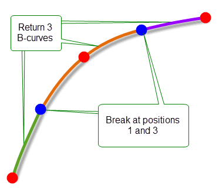Figure 18-13 Returning several B-curves from the splining operation
If your application relies on reproducing behaviour when updating models built using earlier versions of Parasolid, you can use the
update
option to help eliminate differences in rebuild results. This option lets you turn off some of the enhancements to general splining, to ensure that you get the same results in the latest version of Parasolid as in earlier versions. See PK_spline_update_t in the
PK Interface Programming Reference Manual for more information on this
update
option.
|
Note: The default value is PK_spline_update_default_c which uses all appropriate general splining enhancements. Setting to a non-default value disables all appropriate general splining enhancements. |
You can create B-surfaces using splining techniques by interpolating a mesh of points using PK_BSURF_create_splinewise. The points form the corners of the patches of a surface.
Like B-curves, B-surfaces created by PK_BSURF_create_splinewise can be periodic in either the u or the v directions to form a “tubular” surface, or in both directions to form a “toroidal” surface, as shown in Figure 18-14.
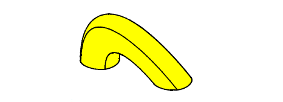Figure 18-14 A periodic surface in either the u or v directions
B-surfaces may be clamped along a boundary by specifying the first derivatives on the relevant boundary at the spline points. For example, the first row of points supplied to PK_BSURF_create_splinewise form the v = 0 boundary of the splined surface, so to clamp this boundary, vectors representing the first derivatives with respect to the v parameter at each spline point of the row should be supplied.
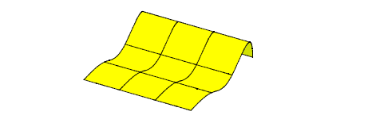Figure 18-15 A surface clamped along a boundary by specifying the first derivatives
If two adjacent boundaries of a B-surface are clamped then the derivative with respect to both u and v at the corner where the clamped boundaries meet can be specified. This vector is called a twist vector.
Parasolid provides the functions PK_BCURVE_create_fitted and PK_BSURF_create_fitted to let you build B-curves and B-surfaces from a set of points sampled from existing curves or surfaces: a process often referred to as curve or surface fitting. These functions are principally used in the following ways:
These functions accept a curve or surface, or an evaluator function that defines a curve or surface, together with options that control the final result. Parasolid then fits a B-curve or B-surface to the supplied curve or surface data by sampling points. The returned B-geometry is guaranteed to be C2-continuous.
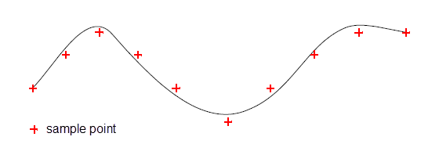Figure 18-16 A B-curve created by tolerantly fitting a set of points
All input to PK_BCURVE_create_fitted and PK_BSURF_create_fitted is done via options structures. The information that you enter falls into the following categories:
|
The geometry information (as appropriate) that you are using to create B-geometry. |
|
|
Distance and angular tolerance values that are used to determine how closely the resulting B-geometry will fit to the supplied geometry information. Parasolid uses these values to decide how to sample points from the supplied information. |
|
|
An array of parameter values that lie within the specified range. The resulting B-geometry is guaranteed to pass through the sample points at these parameter values, as shown in Figure 18-17. |
|
|
Parameterisation options (PK_BCURVE_create_fitted only) |
The
In either case, the geometry of the resulting B-curve matches that of the input curve to within the input tolerance. Note: By setting
preserve_parameterisation
to PK_LOGICAL_false in PK_BCURVE_create_fitted, B-curves with far fewer knots may be created. |
The functions return the resulting B-geometry, together with a structure of fault information that contains details about the maximum distance and angular errors in the fitting operation.
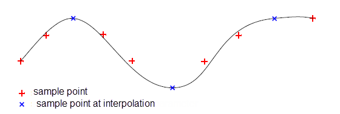Figure 18-17 A B-curve fitted using interpolation parameters
If you are improving the quality of existing geometry, you just need to pass in the relevant curve or surface.
If you want to create a B-curve or B-surface from a geometry definition, you need to provide Parasolid with the following information:
If you need to create several B-curves simultaneously, each with the same parameterisation and knot-set, you can use PK_BCURVE_create_by_fitting instead. This function takes a broadly similar set of options as PK_BCURVE_create_fitted, but can return several B-curves instead of just one. However, PK_BCURVE_create_by_fitting differs from PK_BCURVE_create_fitted in the following ways:
PK_BCURVE_create_by_fitting fits B-curves to chains - connected sets of trimmed curves defined by an array of curves and a matching array of parameter intervals - as shown in Figure 18-18.
Figure 18-18 A B-curve fitted to a chain of curves
You can use PK_BSURF_create_constrained to create a B-surface from a cloud of constraining points. This function creates geometry based on a set of positions and, optionally a set of associated normal data. The shape of the surface that is created is constrained by these positions, and by their normals, if supplied. To further constrain the resulting surface, you can also supply parameterisation information for the set of positions.
Figure 18-19 shows an example in which a B-surface has been created from a set of 7 position vectors, together with the normals of those position vectors.
All information is passed into PK_BSURF_create_constrained using a single received options structure. The options available are as follows:
n_positions positions |
Position constraints for PK_BSURF_create_constrained. Each position in this array denotes a point in the cloud of constraining points used to create the surface. |
uvs uv_surface |
Parameterisation information for the
If you supply neither of these, Parasolid derives parameterisation information automatically. Note: You should not supply both
uvs
and
uv_surface
. |
n_normals normals normal_indices |
Normal constraint information for the |
tolerance angular_tolerance |
|
optimise |
Whether to optimise the operation for performance or improved surface smoothness. This option can take the following values:
|
update |
If your application relies on reproducing behaviour when updating models built using earlier versions of Parasolid, you can use the |
Figure 18-19 Creating constrained surfaces
|
Note: PK_BSURF_create_constrained does not impose specific limitations on the data passed to it, but its performance and memory requirement are dependent on the number of constraints you specify and the tolerances to be achieved. Whenever possible, follow these guidelines: |
A B-surface can be created by interpolating a set of pre-defined B-curves using PK_BCURVE_make_bsurf_lofted. This is called lofting.
The surface is continuous up to second order in the loft direction and each curve lies along a constant v parameter line.
Figure 18-20 A B-surface created by lofting
Various controls can be put on the lofting to alter the shape of the lofted surface. Some of these are mutually exclusive. For example, asking for both clamped and periodic end conditions is invalid. The controls are:
Figure 18-21 A lofted surface that is degenerate at both ends
PK_BCURVE_make_matched is supplied to allow you to do this amalgamation outside of lofting before passing the curves in.
Figure 18-22 Curves with and without amalgamation
Figure 18-23 A degenerate segment added to a curve
For further information see Chapter B, “The Mathematical Form Of B-Geometry”.
Twist vectors at either of the corners of a clamped boundary may be supplied, and have a similar effect to clamping in splining.
You can extract a constant parameter curve from a surface in either its U or V direction using PK_SURF_make_curve_isoparam. This function receives any type of surface (including B-surface types) and returns the constant parameter curve together with, optionally, the interval of the portion of the curve that lies on the surface. Wherever possible, PK_SURF_make_curve_isoparam tries to simplify the extracted constant parameter curve to be in the form of an analytic curve, though you can influence the curve type returned using the
preferred_curve_type
option.
You can enquire whether a curve on a given surface is a constant parameter using PK_CURVE_is_isoparam. This function receives a curve with a specific range and a given surface. If the curve is a constant parameter, the surface parameter in which the curve is constant and its value are returned. You can choose to return the surface range occupied by the curve using the
want_interval
option. You can also choose to return information on how the non-constant surface parameter varies with respect to the parameterisation of the curve using the
want_alignment
option.
PK_CURVE_make_approx creates a re-parameterised approximation of a curve. You can use this function to clean up a badly-parameterised curve without changing the curve’s position in 3-space, as shown in Figure 18-24. Two types of parameterisation are possible:
Figure 18-24 Re-parameterisng a badly parameterised curve
Whenever possible, PK_CURVE_make_approx uses the same type of geometry in the new curve as was used in the original curve. For example, re-parameterising a straight line or a circular interval creates a new line or circle, respectively. If it is not possible to use the same type of geometry, then a b-curve is used to approximate the original.
PK_CURVE_make_approx takes a curve, an interval of that curve for which an approximation is to be created, and a set of options. It returns a new curve, a new interval, and a boolean that indicates whether or not the new curve uses the same geometry as the original.
The options that can be set are:
Isocline curves and isocline surfaces are represented in Parasolid by existing geometric entities. This means that, in the general case, Parasolid's representation is approximate and therefore a tolerance argument is used with the functions described in this section. The tolerance is the maximum 3-space deviation allowed between mathematical isocline geometry and the representation.
Isocline curves are normally represented by SP-curves. The basis surface for the SP-curve is the supplied surface on which isocline curves are sought.
Parasolid has adopted a boundary definition of an isocline curve. The direction in which the curve parameter along an isocline curve increases is defined as:
Hold the surface with its normal pointing upwards and move along the isocline curve in the direction from the start to the end, then the surface is steep on the right and not steep on the left.
|
Note: A position on a surface where any surface tangent makes an angle greater than or equal to zero, and less than the draft angle, with the draw direction is said to be steep. |
To create isocline curves use PK_SURF_make_cus_isocline which, in addition to its primary task of creation, also returns whether or not the surface is steep.
Figure 18-25 illustrates contour-map style diagrams where families of isocline curves have been generated for an arithmetic progression of draft angles and scribed onto their relevant faces.
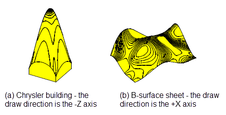Figure 18-25 Contour-map style diagrams
Through any curve there are, in general, two isocline surfaces, which are distinguished as follows:
If you walk along the curve in the direction from the start parameter to end parameter with your head pointing in the draw direction, then there are two isocline surfaces below you: one to your left and one to your right. These surfaces are called the left surface and the right surface.
To create an isocline surface that passes through a given curve use PK_CURVE_make_surf_isocline.
Isocline surfaces are defined by the envelope of a conical cutter whose axis is the draw direction tracing out the reference curve being drafted through at its tip. There are two such resultant surfaces, see Figure 18-26 for which Parasolid has adopted the previous convention to choose between the two solutions.
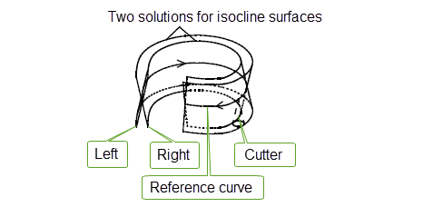Figure 18-26 Two isocline surfaces and a cutter
Though it is possible to control the
range
of the isocline surface along the draw direction, the function automatically trims this range back in order to prevent the surface becoming degenerate, see
Figure 18-27 This trimming process attempts to ensure that the surface does not locally self-intersect.
Figure 18-27 Trimmed isocline surface
If no surface exists which can satisfy the conditions, e.g. the given curve is steep, then there is no solution and the value PK_ENTITY_null is returned.
You can use PK_EDGE_make_curve to create a single smooth continuous curve from a chain of connected edges to a given tolerance. The function receives a number of edges, a tolerance and options, and returns tracking information on the curve. The
curve_dir
option is this function is used to determine the direction of the curve.
Parasolid provides several ways to modify B-curves and B-surfaces in your model. This section describes the main functionality available that is specifically designed to operate with B-geometry.
For examples of this functionality, see the code example in the
C++\Code Examples\Modelling\Modify
folder, located in
example_applications
in your Parasolid installation folder.
A parameter or parameter line can be added to a B-curve or B-surface using PK_BCURVE_add_knot or PK_BSURF_add_u_knot/PK_BSURF_add_v_knot. This has the effect of increasing the number of segments on a curve or the number of rows or columns of a surface.
Conversely, parameters or parameter lines can be removed from a B-curve or B-surface using PK_BCURVE_remove_knots or PK_BSURF_remove_knots respectively. These functions both provide options to let you specify:
PK_BSURF_remove_knots takes an additional argument to let you specify which parameter direction knots should be removed in.
|
Note: You can query a B-curve or B-surface for its knots and multiplicities using PK_BCURVE_ask_knots and PK_BSURF_ask_knots respectively. |
Parasolid provides the functions PK_BCURVE_clamp_knots and PK_BSURF_clamp_knots in order to ensure that a B-curve or B-surface has Bezier end conditions. These functions do not return any information after a successful operation. If an input entity already has Bezier end conditions, these functions leave it unmodified.
You can use PK_BCURVE_raise_degree or PK_BSURF_raise_degree to raise the degree of a B-curve or B-surface respectively.
You can use PK_BCURVE_lower_degree and PK_BSURF_lower_degree to undo the effects of PK_BCURVE_raise_degree and PK_BSURF_raise_degree. This can be especially useful if raising the degree has resulted in a slightly perturbed curve or surface.
|
Note: Lowering the degree of a general nth-degree curve or surface is usually not possible. Instead, you should rebuild such B-geometry use the curve and surface fitting functionality described in Section 18.4.8, “Rebuilding curves and surfaces”. |
You can use PK_BCURVE_reparameterise or PK_BSURF_reparameterise to rescale (uniformly) and translate the knot vector of a given B-curve or B-surface, respectively. B-surfaces can be reparameterised in either the U or the V directions (or both), by setting appropriate options in PK_BSURF_reparameterise_o_t. In addition, you can choose to transpose the U and V directions, or reverse one or both of them. In the context of topology, you can use PK_FACE_reparameterise_surf to reparameterise the surfaces of an attached set of faces where a similar set of options is provided. When using these functions, only the curve and surface parameterisation is changed. Position and shape is preserved.
You can use PK_BCURVE_extend to extend a B-curve in either direction, using one of several methods. This function receives a B-curve, together with an options structure that contains information detailing how the B-curve should be extended. The options structure holds the following fields:
high_control low_control |
|
extend_closed |
The fields
high_control
and
low_control
, each of type PK_extend_control_t, are structures that contain information describing how to extend the given B-curve at the high- and low-parameter ends of the curve, respectively. They each contain the following fields:
extension_shape |
The method used to extend the B-curve. The following extension shapes are available:
Figure 18-28 illustrates the difference between each of these extension shapes. |
extension_type |
The method used to measure how far to extend the B-curve. You can choose between the following:
|
value |
How far to extend the B-curve, as determined by the specified |
Figure 18-28 Shapes available when extending B-curves
The field
extend_closed
, of type PK_extend_closed_t, determines whether to extend closed B-curves. It can take the following values:
|
Do not extend closed curves. Parasolid returns a status of PK_BCURVE_extend_unextended_c if the input B-curve is closed. This is the default. |
|
|
Warning: Extending a closed B-curve will result in a self-intersecting B-curve. |
There are a few restrictions placed on curves and surfaces created using these methods. These are to ensure that the curve or surface does not self-intersect or have a cusp. Any function which requires a surface that has been checked performs these checks. These checks are only be performed once, with the result being stored in the data structure. PK_GEOM_check can be used to test if the surface is acceptable to Parasolid for modeling purposes. Full details of the restrictions on parametric curves and surfaces are given in a later section.
For reasons of performance it is recommended that any rational curve or surface whose weights are all identical be entered as non-rational and the weights ignored.
A B-curve or B-surface, or a portion of one, can be made into a wire or sheet body by PK_CURVE_make_wire_body_2 and PK_SURF_make_sheet_body. The form of the resulting body is dependent on whether or not the B-curve or B-surface passes the composite geometry checks. When it does not pass the composite geometry checks Parasolid splits it as required in order to produce the minimum number of edges/faces possible.
This section describes some of the ways of building models incorporating B-geometry. It assumes that the user has already created B-curves or B-surfaces, and input them to Parasolid as wires or sheets.
All wires and sheets, except for foreign geometry, can be swept or spun using PK_BODY_spin and PK_BODY_sweep, in the same way as any other wire or sheet.
A wire is swept or spun into a sheet, and a sheet into a solid. It is also possible to make a profile by scribing B-curves onto a face until a closed loop is formed, then sweeping or spinning the profile to make a solid body.
Sheet body made by spinning a composite B-curve wire
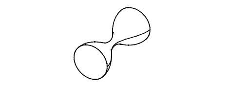Figure 18-29 A sheet body created by spinning a composite B-curve wire
Solid body made by sweeping a planar profile composed of B-curves and straight lines
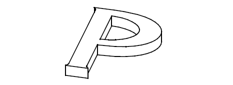Figure 18-30 A solid body created by sweeping a planar profile
Solid body made by spinning a B-surface sheet
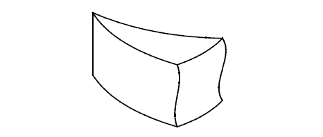Figure 18-31 A solid body created by spinning a B-surface sheet
The tweak operation, supported by PK_FACE_replace_surfs_3, can be used to replace the surface of a face by a B-surface. It automatically extends or reduces the adjacent faces, if possible, to meet the B-surface within a specified tolerance, provided this does not change the topology.
Top face of cylinder tweaked to a B-surface:
Figure 18-32 Tweaking the top face of a cylinder to a B-surface
If a sheet created from a B-surface is closed in one direction, it is often possible to make a solid body by 'capping' the holes in the body. This requires the edge loops surrounding the holes to be simple enough to be fitted by a single surface - for example, if the edges are coplanar then a plane is used to cover the hole. If a wire body is spun about an axis through a full rotation, the edge loops are always coplanar. The function which supports capping is PK_FACE_make_solid_bodies.
A special case is when the surface sheet is already closed through being degenerate: (like a lemon), or because it is closed in both directions (like a torus). In this case, there are no holes to cover, and PK_FACE_make_solid_bodies automatically creates a solid from the closed sheet.
Solid made from the faces of the spun sheet body seen earlier, with the ends capped with planar surfaces:
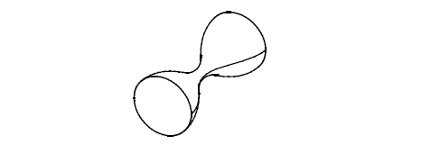Figure 18-33 Solid created by capping the ends of the sheet body in Fig. 10-18
Non-circular torus made from a closed sheet body whose only surface is a doubly periodic B-surface:
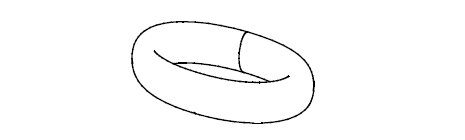Figure 18-34 Non-circular torus created from a closed sheet body
The most useful and reliable way of introducing B-surfaces to a solid model is by using the subtract operation, supported by PK_BODY_section_with_sheet_2 or PK_BODY_boolean_2. This can be performed between a solid body and a B-surface sheet body. The sheet body must be sufficiently large to cut through the solid completely, otherwise the function fails. It may be necessary to extend the sheet body to cut the solid in the required manner; PK_FACE_delete_2, with the PK_FACE_heal_grow_from_parent_c option, or PK_BODY_sweep, can be used to do this. Examples of the use of each of these sequences are shown below.
Block sectioned by subtracting a B-surface sheet body. Resulting bodies moved apart.
Figure 18-35 Sectioning a block by subtracting a B-surface sheet body
In this example the solid needs to be extended before the sheet can be subtracted.
Figure 18-36 Tweaking a solid body to a B-surface
The first method is to remove the top planar face using PK_FACE_delete_2 with the grow option, and then subtract the sheet to produce this:
Figure 18-37 Deleting the top face using the grow option
The second method is to sweep the top face before subtracting, which produces this:
Figure 18-38 Sweeping the top face
Sewing is the final method for building B-surface sheets into solids. For further information on this see Chapter 47, “Sewing and Knitting”.
There are a number of restrictions on the shape of B-curves and B-surfaces which can be made into wires or sheets. Some, such as the restriction on self-intersection, are designed to prevent the creation of invalid bodies. Others are designed to limit the complexity of curves and surfaces.
The following restrictions apply to B-curves:
Checking for self-intersection can be switched ON or OFF in a session using PK_SESSION_set_check_self_int.
See Chapter 31, “Checking” for further information on geometric self-intersection checking.
In addition, if a B-curve is to be attached to an edge:
If the B-curve does not obey these restrictions then PK_CURVE_make_wire_body_2 splits it into two or more curves.
The restrictions on surfaces are divided into two groups - those on the shape of the composite surface and restrictions on surface degeneracies. Degenerate (i.e. two or three sided) B-surfaces are allowed, as are surfaces with partially degenerate boundaries, but only in certain configurations.
The following restrictions apply to the shape of a B-surface:
Checking for self-intersection can be switched ON or OFF in a session using PK_SESSION_set_check_self_int. See Chapter 31, “Checking”.
In addition if a B-surface is to be attached to a face the following composite geometry restrictions apply:
If the B-surface does not obey these restrictions then PK_SURF_make_sheet_body splits it into two or more surfaces.
Degenerate B-surfaces are allowed, but only in certain situations. A degeneracy is a place where a region of the parameter space of the surface reduces to a single point of Cartesian space. In this region one or both first partial derivatives are zero. The restrictions on such degeneracies are:
The restrictions on the use of B-surfaces arise mainly from the property that the surfaces are bounded. This implies that any operation which requires a surface to be extended beyond its boundaries may not be possible. A face on a surface patch often has boundaries inside the patch boundaries; if so, the face may be extended to the patch boundary, but no further.
Figure 18-39 Extending a face to the patch boundary
An example of the manifestations of this restriction is that you cannot transform the side of this block outwards, because it is limited by the boundary of the B-surface on the top face.
Parasolid does not support regions of coincidence. Therefore when these occur an error message is returned from the relevant boolean and intersection functions.
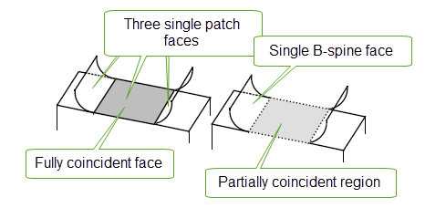Figure 18-40 Coincident regions
For the purpose of Parasolid an offset surface is defined as a smooth, G1-continuous surface, from any point of which the minimum distance to the underlying surface is exactly equal to the required offset distance.
An offset surface may be introduced into a solid body by:
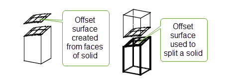Figure 18-41 Using an offset surface to split a solid
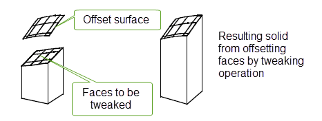Figure 18-42 Offsetting faces by tweaking
Offset surfaces can only be created provided the result contains no:
As it is not possible to model with self-intersecting surfaces Parasolid checks the geometry of the underlying surface to ensure that the resulting surface is not self-intersecting before creating the offset surface from any surface other than a B-surface. This check is completed regardless of whether PK_SESSION_set_check_self_int has been called.
If the surface to be offset is a B-surface, then its offset may only be created if it is capable of passing the composite geometry checks outlined in PK_GEOM_check, however checks for self-intersection are not made. The created offset surface may be checked for self-intersection by explicitly calling PK_SESSION_set_check_self_int and PK_GEOM_check.
For further details on geometric self-intersection checking of offset surfaces, see Chapter 31, “Checking”.
Wherever possible the surface created are not explicitly of type offset surface but of one of the simple analytic types. For example, a plane always offsets to a plane. This rule also applies where a simple type includes all of the proper offset surface, but extends beyond the region where the offset surface would be meaningful. An example of this is a cone offset outwards. Although the offset surface strictly only extends to a truncated cone, PK_OFFSET_create returns the cone surface type, as that includes all of the desired surface.
Therefore it is only the following underlying surface types that lead to an offset surface type:
If a sequence of offset operations results in the original surface being recreated, Parasolid automatically discards all the offset surface data and uses the original surface data.
Their are two offsetting functions available through the PK interface:
There are three methods of introducing offset surfaces into a model. These are:
To create a sheet body from a general surface and a wire body from a one or more general curves use PK_SURF_make_sheet_body and PK_CURVE_make_wire_body_2. Parametric limits may be supplied to enable the range to be defined. If they are not supplied the default is to use the whole parameter range for the relevant parameter. When the surface or curve is periodic the first parametric limit must lie in the range, and the difference between the two must not exceed the period for the given parameter. If the surface or curve is not periodic, both limits must lie in the range.
The following restrictions apply to offset surfaces
| <<< Geometry | Chapters | Nominal Geometry >>> |